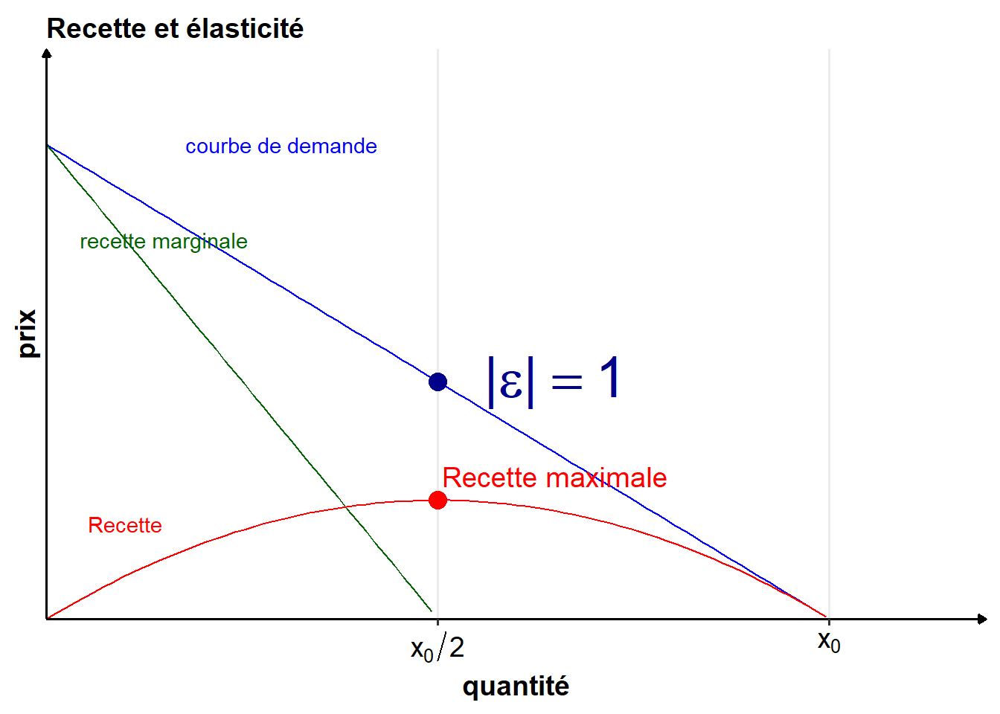
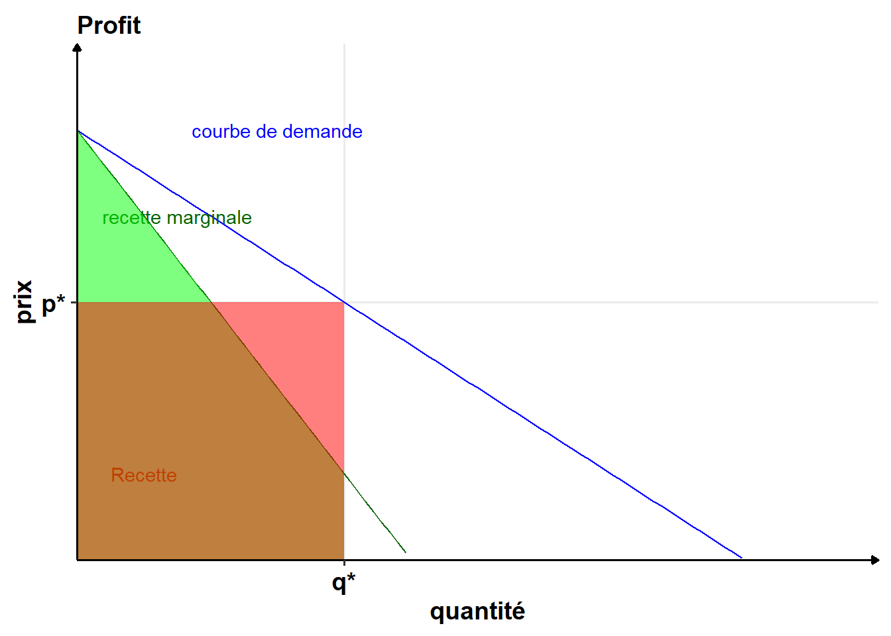

La courbe de recette marginale est toujours située en-dessous de la courbe de demande : \[ R_m(q) = P(q) + q\frac{d P(q)}{dq} < P(q) \] et \(\frac{d P(q)}{dq}\) est négative (la demande est décroissante quand le prix augmente).
Prenons maintenant l’exemple d’une courbe de demande linéaire quelconque \(P(q) = a-bq\) (\(a\) et \(b\) sont des paramètres quelconques).
On obtient alors \(R_m(q) = a-2bq\) (et \(R(q) = aq-bq^2\)).
Dans le cas linéaire, le revenu marginal est une droite de pente deux fois plus forte que la demande, et ayant la même ordonnée à l’origine.
La recette marginale divise en deux tout segment horizontal entre l’axe des ordonnées et la courbe de demande.

La recette maximale est atteinte lorsque la valeur absolue de l’élasticité prix de la demande est égale à 1 (\(|\varepsilon_{q/p}|=1\)).

On peut calculer le profit de deux manières :
Le résultat provient de l’égalité d’aire entre le triangle vert et le triangle rouge.